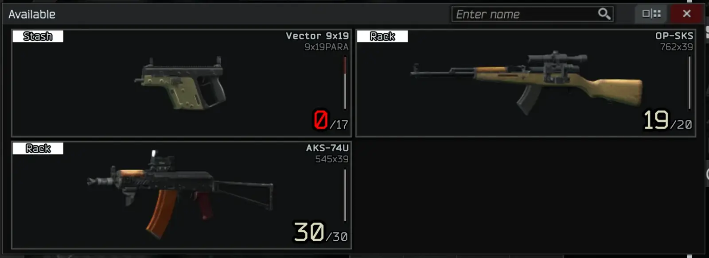

Equip From Weapon Rack
- Downloads
- 31,702
- Favourites
- 37
- Mod lists
- 91
Tired of having to load your hideout just to get access to one of your guns that you’ve put on display?
No more! Now you can use the quick equip selector to pick guns from your weapon rack alongside those in your stash!

Installation
1) Open the downloaded zip file in 7-zip
2) Select the folder in the zip file in 7-zip
3) Drag the selected folder from 7-zip into your SPT folder
Demonstration Video (Yes, it’s Quest Tracker, but the same concept applies to all of my mods, I’m not making mod-specific extraction example videos):

Configuration
That’s the neat part, there isn’t any. The plugin is drag and drop, and starts working the next time you load the game. Zero configuration, zero fuss.
If you enjoy my work, you can feed my caffeine addiction
Version
1.5.0
- Update for SPT 4.0.0
Version
1.4.0
This version will only work with SPT 3.11.x
Update for SPT 3.11
Version
1.3.0
This version will only work with SPT 3.10.x
- Update for SPT 3.10.0
Version
1.2.0
This version will only work with SPT 3.9.x
- Update for 3.9.0
Version
1.1.0
This mod was written to be generic, and support as many versions of SPT as possible. Currently tested and known working on SPT 3.8.0
Update for 3.8.0
- Should be more forward compatible hopefully
Version
1.0.1
This mod was written to be generic, and support as many versions of SPT as possible. Currently tested and known working on SPT 3.7.0-3.7.6
Small bug fix and QoL improvement
- Add a label on items in the quick equip list to indicate whether they’re in the stash or weapon rack
- Fix a bug on accounts that haven’t unlocked the weapon rack yet
Version
1.0.0
This mod was written to be generic, and support as many versions of SPT as possible. Currently tested and known working on SPT 3.7.0-3.7.1
Initial Release
Note: Support for versions prior to 3.7.0 is not possible, due to those versions lacking the quick equip functionality